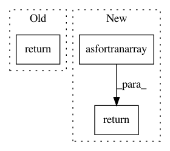

2562f136420d61d3a1c9861876ebc6028125a160,scipy/linalg/_interpolative_backend.py,,idd_reconid,#Any#Any#Any#,228
Before Change
return _id.idd_reconid(B, idx, proj)
else:
P = idd_reconint(idx, proj)
return np.dot(B, P)
def idd_reconint(idx, proj):
Reconstruct interpolation matrix from real ID.
After Change
Reconstructed matrix.
:rtype: :class:`numpy.ndarray`
B = np.asfortranarray(B)
if proj.size > 0: return _id.idd_reconid(B, idx, proj)
else: return B[:,np.argsort(idx)]
def idd_reconint(idx, proj):
Reconstruct interpolation matrix from real ID.
In pattern: SUPERPATTERN
Frequency: 4
Non-data size: 3
Instances
Project Name: scipy/scipy
Commit Name: 2562f136420d61d3a1c9861876ebc6028125a160
Time: 2013-07-04
Author: inform@tiker.net
File Name: scipy/linalg/_interpolative_backend.py
Class Name:
Method Name: idd_reconid
Project Name: nilearn/nilearn
Commit Name: 3daedc17ddab948752f3d6b90e56b177ea77ec42
Time: 2014-02-26
Author: virgile.fritsch@gmail.com
File Name: nilearn/mass_univariate/permuted_least_squares.py
Class Name:
Method Name: _f_score
Project Name: scipy/scipy
Commit Name: 2562f136420d61d3a1c9861876ebc6028125a160
Time: 2013-07-04
Author: inform@tiker.net
File Name: scipy/linalg/_interpolative_backend.py
Class Name:
Method Name: idz_reconid
Project Name: librosa/librosa
Commit Name: 502ed6f5ed2c434e4a3a6eec508bfd809e4b52e8
Time: 2019-08-16
Author: brian.mcfee@nyu.edu
File Name: librosa/feature/utils.py
Class Name:
Method Name: stack_memory